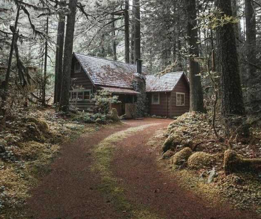

Mike se dirige hacia la cabaña. Es un camino largo y con poca visibilidad, pero nada que Mike no pueda hacer.
De repente, un animal salvaje sale de entre los árboles, y empieza a perseguir a Mike.
Mike no es muy rápido como para escapar del animal dentro del bosque, pero tiene opciones de cómo protegerse del peligro inminente.
Es momento de decidir rápidamente qué hacer para sobrevivir.